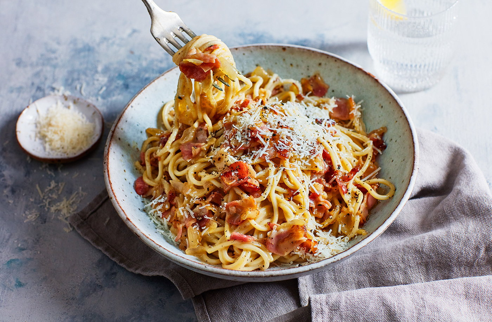
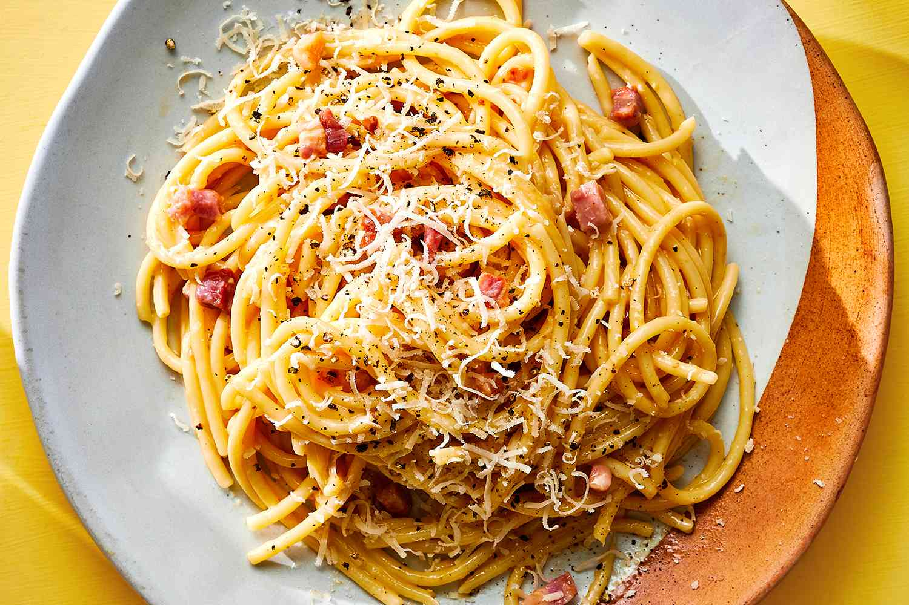

Carbonara is made with guanciale (cured pork), eggs, Pecorino Romano cheese, spaghetti pasta, and lots of black pepper. Italians don't add extra ingredients like cream, milk, garlic, or onions. Try this recipe if you want to make an authentic, creamy carbonara that comes straight from Italy, where I live. Buon appetito!